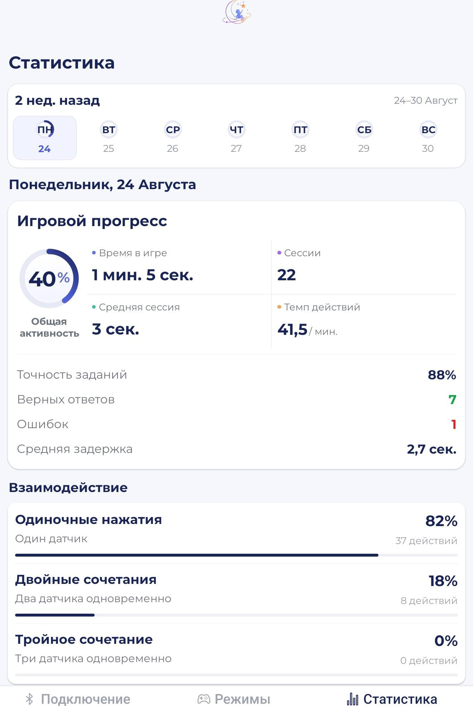

01 / ЭЛЕКТРОНИКА
Система мониторинга давления на ESP32
Игрушка на базе ESP32, которая считывает касания ребёнка с датчиков давления, смешивает цвета на RGB-ленте и передаёт полученные данные в мобильное приложение по Bluetooth.
Подробнее о проекте
Датчики FSR изменяют своё сопротивление под действием давления. ESP32 считывает их показания и передаёт данные через Bluetooth Low Energy (BLE) в мобильное приложение. Это позволяет получать информацию об активности ребёнка.